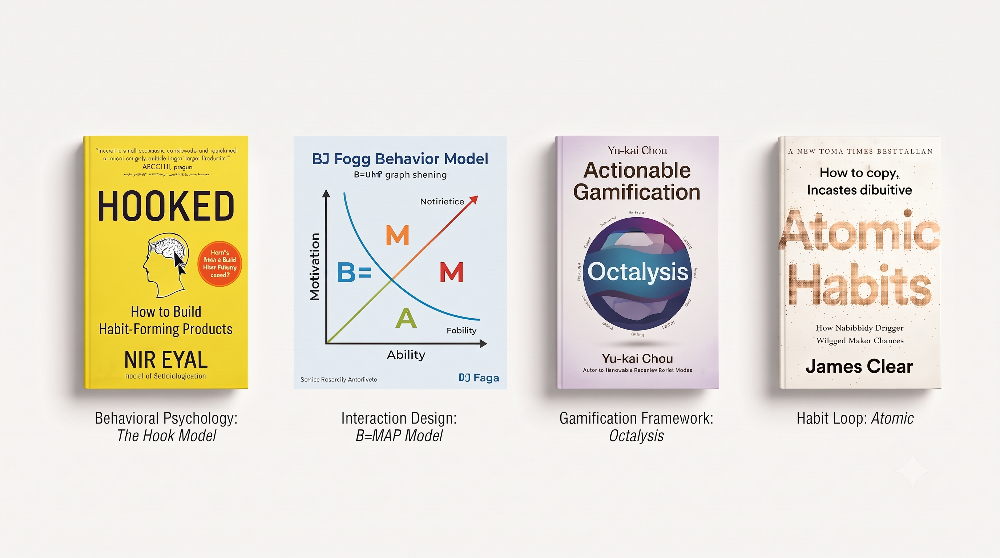
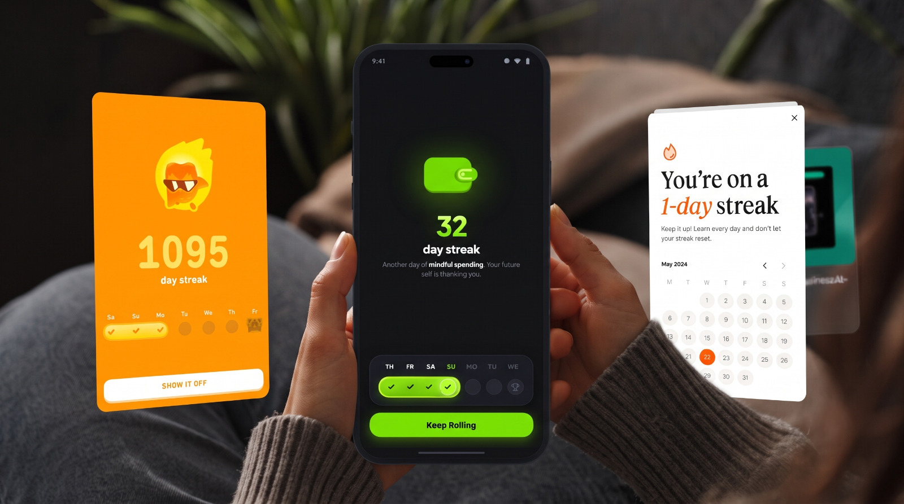
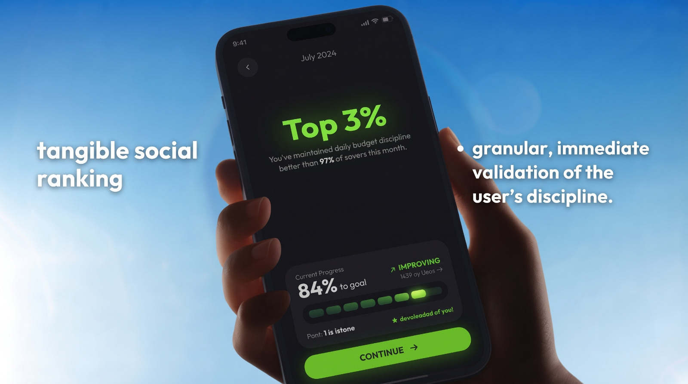
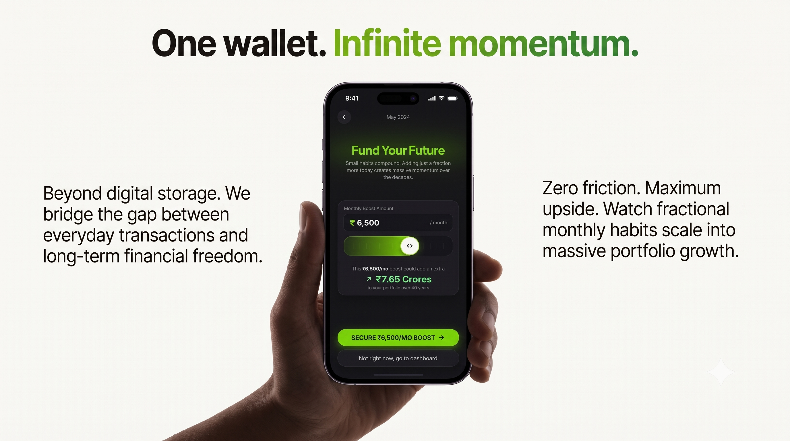

Intercepting the Ostrich Effect
Redesigning the pre-dashboard experience with behavioral psychology.
Users wanted to show off their stats, but sharing raw links were boring and unshareable on social media had less than 10% report shares of the total
This friction broke our organic growth loops, preventing athletes from naturally acting as brand advocates.
We needed to transform boring data dumps into status-driven, highly shareable visual artifacts to drive acquisition.
The Behavioral Foundation

The core design strategy is grounded in established psychological and interactive frameworks. The methodology combines Nir Eyal's Hook Model for behavioral psychology, the BJ Fogg Behavior Model for interaction design, Yu-kai Chou's Octalysis for gamification, and James Clear's Atomic Habit loop.
Building the Habit Loop

A visual daily streak mechanic leverages loss aversion to keep users engaged. Highlighting milestones like a 32-day or 1095-day streak alongside calendar tracking shifts focus to maintaining a rewarding daily rhythm. This turns the friction of expense logging into a proactive daily achievement.
Status-Driven Motivation

We contextualized budget discipline by introducing a tangible social ranking. Showing users they are in the "Top 3%" of savers provides granular, immediate validation of the user's discipline. This translates abstract financial goals into a highly motivating, status-driven game.
Infinite Momentum

To bridge the gap between everyday transactions and long-term financial freedom, we introduced an interactive monthly boost slider.